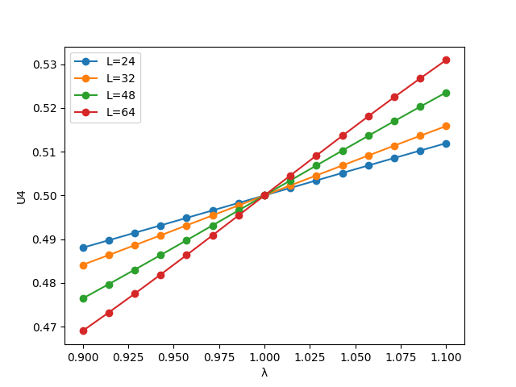
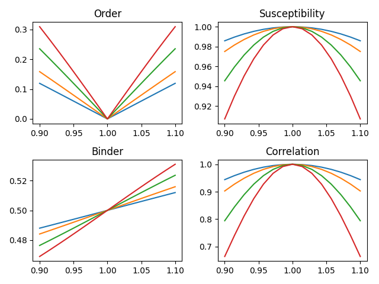
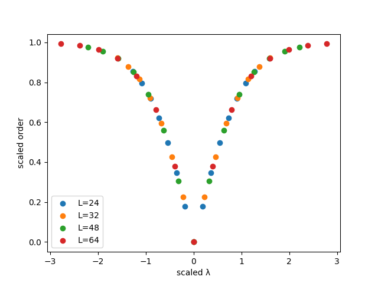
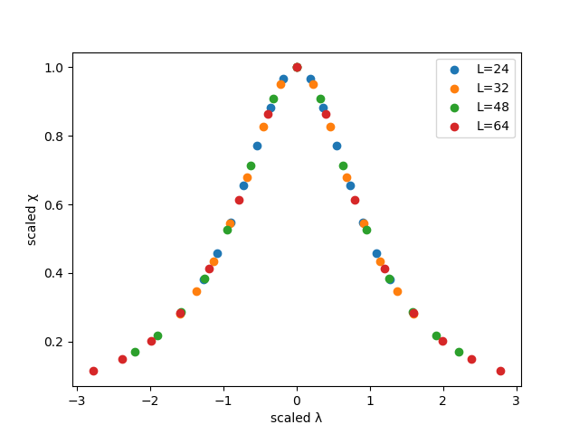

Model
2D TDGL dynamics with stochastic forcing and a control parameter driving a coherence phase transition.
2D TDGL / Finite-Size Scaling / Data Collapse
A GitHub Pages front-end for visualizing Binder crossings, susceptibility, order-parameter scaling, and data-collapse figures from the 2D coherence-field simulations.
This project explores whether a scalar coherence field exhibits critical behavior under stochastic time-dependent Ginzburg–Landau dynamics on periodic 2D lattices. The simulation pipeline measures the order parameter, susceptibility, Binder cumulant, correlation length, and effective coherence coupling across multiple lattice sizes.
2D TDGL dynamics with stochastic forcing and a control parameter driving a coherence phase transition.
Finite-size scaling, Binder crossings, bootstrap uncertainty estimation, and automatic data collapse.
Publication-style figures generated from simulation results and served as static images through GitHub Pages.
Replace the placeholder image paths below with the figures generated by your simulation pipeline.
By default, the site expects them in an outputs/ folder at the repository root.




coherence_criticality/
├── run_simulation.py
├── config.py
├── coherence_model.py
├── analysis.py
├── plotting.py
├── io_utils.py
├── methods_note.md
├── outputs/
│ ├── raw_results.json
│ ├── summary_results.json
│ ├── fig_binder_crossing.png
│ ├── fig_order_collapse.png
│ ├── fig_susceptibility_collapse.png
│ └── fig_observables_grid.png
└── docs/
├── index.html
└── styles.cssdocs/ folder in your repository.index.html and styles.css into docs/.docs/outputs/ or keep them at repo root and update paths.main) and the /docs folder.